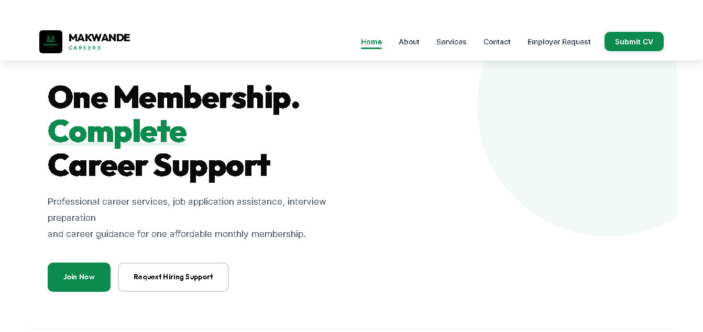
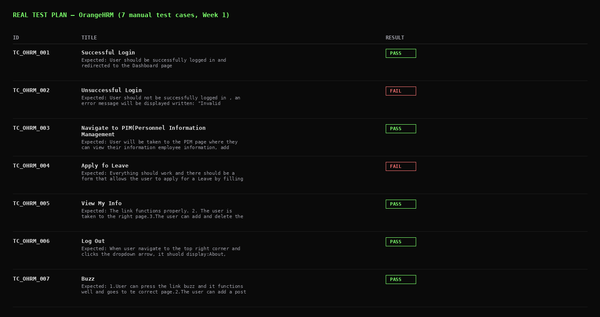
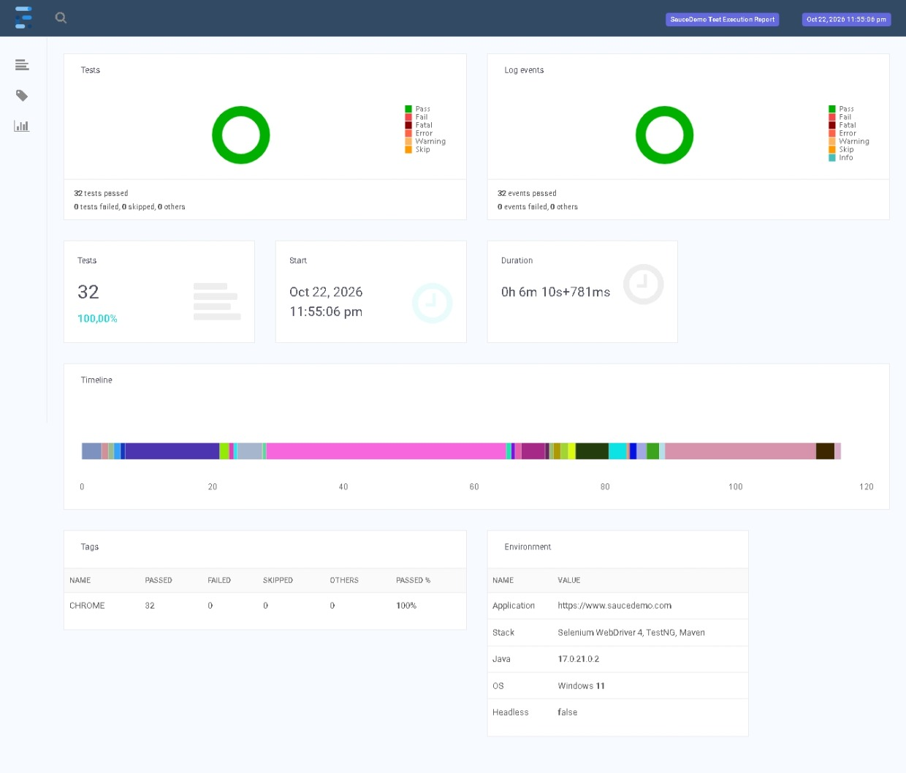
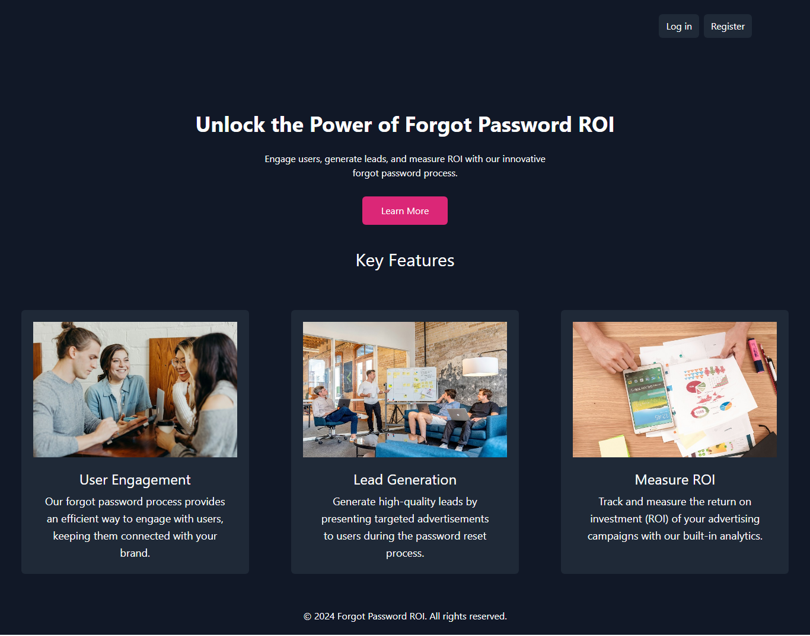

01
Manual testing
Functional, regression, integration, exploratory, non-functional and UAT testing.
QA Software tester
I design and execute manual and automated tests, investigate defects and develop web applications. My experience combines QA testing with full-stack development.
Quality engineering backed by practical development experience across the software lifecycle.
Functional, regression, integration, exploratory, non-functional and UAT testing.
Selenium, Playwright, Pytest and JUnit for repeatable UI and backend validation.
Postman-based API testing and validation independent of the user interface.
Defect management, security testing, release validation and CI/CD workflows.
An end-to-end application where development, QA and delivery came together.

Built the application end-to-end using Python, Flask, PostgreSQL and SQLAlchemy, then carried out QA before go-live and configured CI/CD deployment.
EXPLORE THE QA WORK →Four projects showing how I build, test and deliver software.

Test design, execution, defect investigation and regression testing across three projects.

Java/TestNG and Python/pytest suites with page objects, cross-browser runs and failure screenshots.
Full-stack development, end-to-end testing and deployment of a careers platform.

Forgot Password ROI: advertisement display, interest capture and password recovery.

I'm a software tester and developer based in Gqeberha, South Africa. I started as a developer, built the Makwande Careers web platform end to end, then moved into QA through CAPACITI, a South African tech-skills and work-placement programme, where I tested e-commerce, HR and payment systems. Because I've written the kind of code I test, I know where bugs tend to hide.
I'm looking for a junior QA Analyst or Software Tester role where I can grow my test automation and API testing skills. Outside work, I draw pencil portraits and build websites for freelance clients.
Built user-facing web functionality with PHP, Laravel, Alpine.js and Tailwind CSS, implemented flows and validation, and performed testing and debugging.
Delivered a web application end-to-end, including backend, database, frontend, security, QA and CI/CD deployment.
Worked across manual and automated testing, API testing, regression, defect management, UAT and release validation.
An interactive overview of test planning, execution, automation, defect management and release checks across OrangeHRM, SauceDemo and Makwande Careers.
Scope across two CAPACITI team testing projects and Makwande Careers.
OrangeHRM · SauceDemo · Makwande Careers
Validate critical user journeys on OrangeHRM, SauceDemo and Makwande Careers.
Test plan documented and target environment reachable.
All critical paths executed; no unresolved critical/high defects on code I own.
Selected checks mapped to the uploaded Selenium suites. SauceDemo outcomes come from saved Extent reports; OrangeHRM outcomes come from its saved pytest-html report. Expected failures remain distinct from failures.
Validating behaviour at the API layer, independently of the UI — the Makwande Careers admin login endpoint.
Valid credentials — login_user() is called, the 4-hour session timeout (FR-24) is set, and last_login is updated.
Automated coverage for the flows that would otherwise need re-checking by hand on every release.
Defect management includes reproduction, resolution verification and regression testing.
Five SauceDemo journeys recorded on Chrome, Firefox and Edge: 15 passing executions in the supplied cross-browser report.
| Feature | Chrome | Edge | Firefox |
|---|
Makwande Careers defect traceability, verification and release status.
Makwande Careers is live in production. API testing (Postman) is the one piece still in progress.